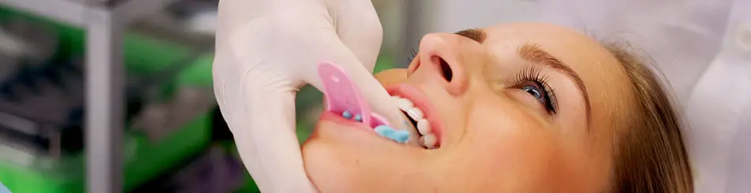

Zjistíte, že díky ní můžete předejít celé řadě nepříjemných komplikací, které mohou vést ke ztrátě zubů.
Práce dentální hygienistky spočívá především v prevenci vzniku zubního kazu, gingivitidy (zánět dásní) a parodontitidy (zánět podpůrných tkání zubů). Součástí terapie je i profesionální vyčištění zubů, tzn. odstranění zubního kamene, zubního plaku a dalších nečistot, které do ústní dutiny nepatří a mohou ji dráždit. Je-li to přáním klienta, provede hygienistka také estetické úpravy zubů (pískování, leštění a bělení zubů, aplikace dentálních šperků).
Aby byla dentální hygiena maximálně účinná, je zapotřebí úzké spolupráce se zubním lékařem a samotným pacientem. Na základě všech dostupných informací a výsledků vyšetření zvolí dentální hygienistka nejvhodnější individuální techniku čištění zubů a mezizubních prostor. A za pomoci podrobné instruktáže vás naučí, jak se o svůj chrup nejlépe starat.
Nejlepších možných výsledků a pohodlí dosáhnete pouze v případě, že duo hygienistka a doktor fungují společně. Pro hygienistku je potřeba vidět během ošetření RTG snímky, konzultovat pacientovu reakci na probíhající léčbu a v neposlední řadě pracovat v lokální anestesii nebo pod clonou antibiotik, které však smí podávat pouze lékař!

Návštěva dentální hygienistky
Během první návštěvy se dentální hygienistka zaměří na zjištění stavu vaší orální dutiny. Důkladně vyšetří zuby, dásně a dalších částí dutiny ústní. Pomocí rentgenových snímků získá přehled o zdraví nejen Vašich zubů, ale i tkání uložených pod dásněmi. Na základě výsledků vyšetření stanoví dentální hygienistka individuální léčebný plán, ošetří dutinu ústní (odstraní pigmentaci, zubní plak, zubní kámen atd.), doporučí vhodné pomůcky a techniku čištění. Bude-li potřeba ošetření většího rozsahu, dohodnete se s hygienistkou na dalším termínu sezení. Podle potřeby a individuálního léčebného plánu se budou vaše návštěvy opakovat v 3, 6, nebo 12měsíčních intervalech. Četnost návštěv a jejich rozestup se bude také odvíjet od plánovaných zákroků u vašeho zubního lékaře.
Základní pojmy ve stomatologii:
Zubní plak a zubní kámen
Zubní plak je měkký povlak, který vzniká ze zbytků jídla a bakterií, a ulpívá na povrchu zubů a zubních náhrad. Jeho uchycení je tak pevné, že se dá odstranit pouze mechanicky za použití zubního kartáčku a dalších pomůcek určených k ošetření dutiny ústní. Pouhým vyplachováním se zubního plaku nezbavíte. Pokud není zubní plak odstraněn, usazují se do něj minerální látky ze slin a potravy, a tím vzniká zubní kámen. Zbavením se zubního plaku a kamene předejdete nepříjemnému faux pas se zápachem vycházejícím z vašich úst.
Zánět dásní a parodontu
I zánět dásní (gingivitida) je zapříčiněn zubním plakem, který ulpěl na povrchu zubů a v mezizubních prostorech, a nebyl odstraněn. Bakterie v něm obsažené produkují toxiny, které dráždí dásně tak dlouho, až vznikne zánět. Ten se projevuje zduřením a zčervenáním dásní v okolí zubu, či v mezizubních prostorech, krvácením (při jídle, čištění zubů) a zápachem z úst.
Léčba zánětu dásní
K vyléčení zánětu dásní je zapotřebí pravidelné a důkladné odstraňování zubního plaku za pomoci vhodně zvolených pomůcek. Technik čištění a pomůcek existuje celá řada a ne všechny lze použít univerzálně na každý chrup. Každý z nás je jedinečný a stejně tak naše zuby (tvar zubu, šíře mezizubních prostor, vrozené a získané odchylky atd.). Proto je důležité vybrat správný způsob čištění přímo na míru každému pacientovi. A od toho tu je právě dentální hygienistka.
Zánět parodontu
Při neléčení zánětu dásní napadají bakterie a jejich toxiny i závěsný aparát zubu (parodont), který má za úkol držet zub pevně v zubním lůžku. Tím vzniká parodontitida, lidově parodontóza. Při parodontóze se zubní kámen usazuje pod dásní a je tak na první pohled skrytý. Odhalit se dá pouze klinickým a rentgenovým vyšetřením. Pokud se ve Vaší dutině ústní objeví zubní kámen, je potřeba jej důsledně odstranit. Existují způsoby šetrné jak pro dásně, tak i pro povrch zubů. Zubní kámen se odstraňuje ručně pomocí speciálních kyret a škrabek, a strojově ultrazvukem. Respektive kombinací všech těchto metod. Na závěr se provádí ještě zaleštění povrchu zubu pro příjemný pocit a fluoridace.
Záleží nám na každém z vás
Naší prioritou je, abyste se v naší ordinaci i přes veškeré zákroky cítili příjemně. Nejste pro nás jen “další pacient/ka v pořadí”, jste součástí naší stomatologické praxe a naším úkolem a přáním je Váš spokojený, čistý a zdravý úsměv. Těší nás, když jste spokojení s naší prací a rádi se k nám vracíte. Úsměv nestojí nic a dává mnoho, tak proč se neusmívat každý den!